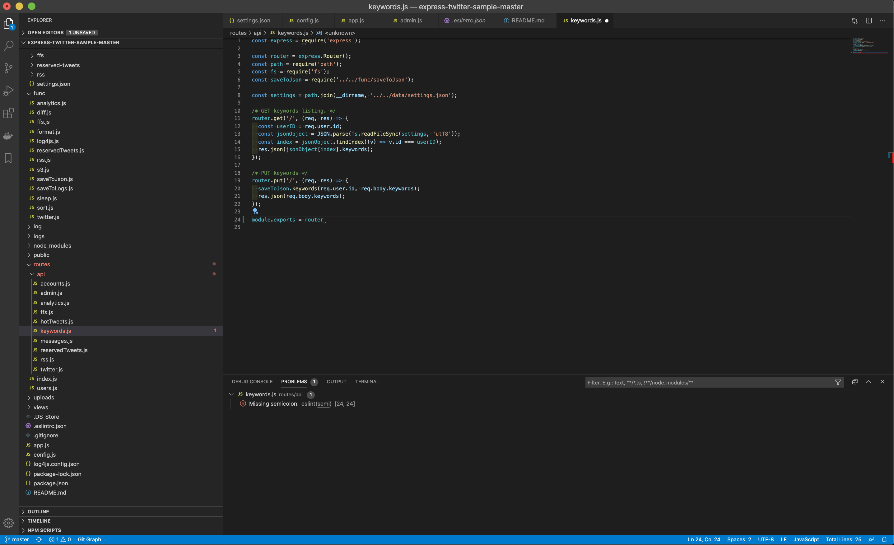

[Node.js]eslintことはじめ ~キレイなJSコードを担保しよう~
eslintはいいぞ

目次
この記事はこんな人が書いています
 だちけん
だちけん
株式会社ムジカルを設立し、webアプリケーションの開発、webマーケティングを担当しています。
webアプリケーションでは、Vue.js、Ruby on Rails、Node.jsを用いての開発が得意です。
まったくゼロの状態から、要件定義を含めてシステム開発にとりかかったことで、幅広い知識を学習しながらよしなに進めるスキルを身につけました。
フリーランスとして、エンジニアリングやコンサルティングも行なっています。
詳しくはaboutを読んでみてください。
最近テストにはまっています。
いらんことに脳のリソースをさかれない状態で開発を進めたいですよね。
そんなわけで今回は、JavaScriptの静的検証ツールeslintをご紹介します。
ことばの紹介
まずは知らない方もいるかと思うので、ことばの紹介から。
わかってるよ！って人は飛ばしてください。
eslintとは
こちらのページが分かりやすかったのでそのまま引用させていただきます。
ESLintはJavaScriptのための静的検証ツールです。
コードを実行する前に明らかなバグを見つけたり、括弧やスペースの使い方などのスタイルを統一したりするのに役立ちます。
同様のツールとしては JSLint, JSHint 等があります。
ESLint の特色は、
- すべての検証ルールを自由に on/off できる
- 自分のプロジェクトに合わせたカスタムルールを簡単に作れる
- 豊富なビルトインルール (5.0.0 時点で 260 個) に加えて、たくさんのプラグインが公開されている
- ECMAScript 2015 (ES6), 2016, 2017, 2018, 2019を標準サポートしている
- JSX記法をサポートしている
- Babel と連携することで、仕様策定中の新しい構文や Flow 型注釈にも対応できる
いろいろ書いていますが、eslintを使えばデバッグせずとも最低限のエラーになりそうなところをアラートで教えてくれます。
TypeScriptにも対応しているので、JavaScriptの型がないフワッとした感覚が苦手な人はTypeScriptと組み合わせると気持ちよく書けるかもしれません。
使い方
それでは早速、使い方のご紹介です。
npmの場合、npm install --save-dev eslint、yarnを使用している場合はyarn add --dev eslintとnode_modulesが含まれるディレクトリで入力してください。
すると、package.jsonが以下のようになるはずです。
# package.json
{
# 省略
"devDependencies": {
"eslint": "^6.8.0", # versionはなんでもいいです
# 省略
}
}
これで、開発環境にのみeslintが導入できましたね。
おすすめのセッティング
続いて、.eslintrc.jsonを作成しましょう。
以下の設定が無難でおすすめです。
AirBnBで導入している設定などもあるのですが、ややこしすぎてエラーでまくるのでやめました。
# .eslintrc.json
{
"env": {
"commonjs": true,
"es6": true,
"node": true
},
"extends": "eslint:recommended",
"globals": {
"Atomics": "readonly",
"SharedArrayBuffer": "readonly"
},
"parserOptions": {
"ecmaVersion": 2018
},
"rules": {
"semi": [2, "always"]
}
}
VSCodeを使おう
そして、エディタはVSCodeがおすすめです。
Node系だとデバックも簡単だし、eslintのエラーもすぐ表示してくれます。
この記事が分かりやすかったですが、VSCodeないにESLintパッケージを導入したらすごく簡単にできました。

こんな感じで、「セミコロン抜けてるよ！」とかをすぐ教えてくれます。